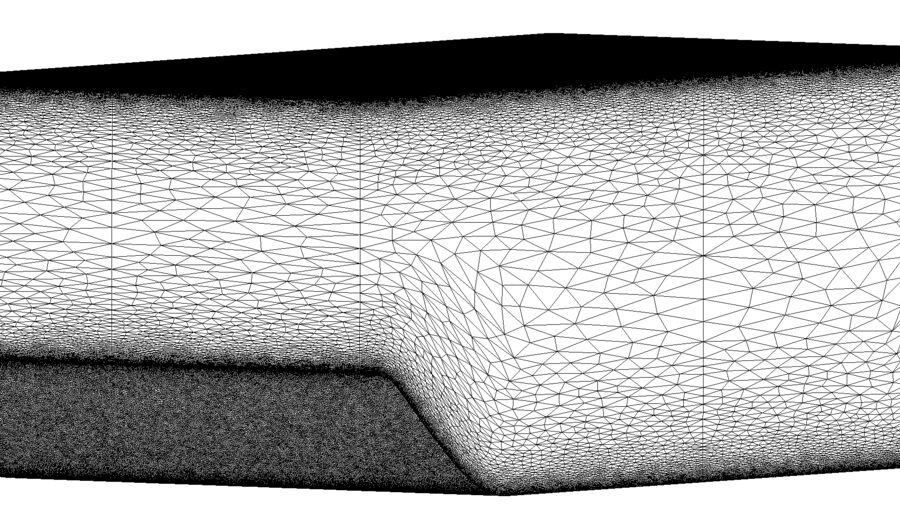
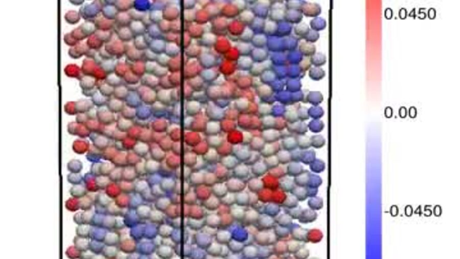
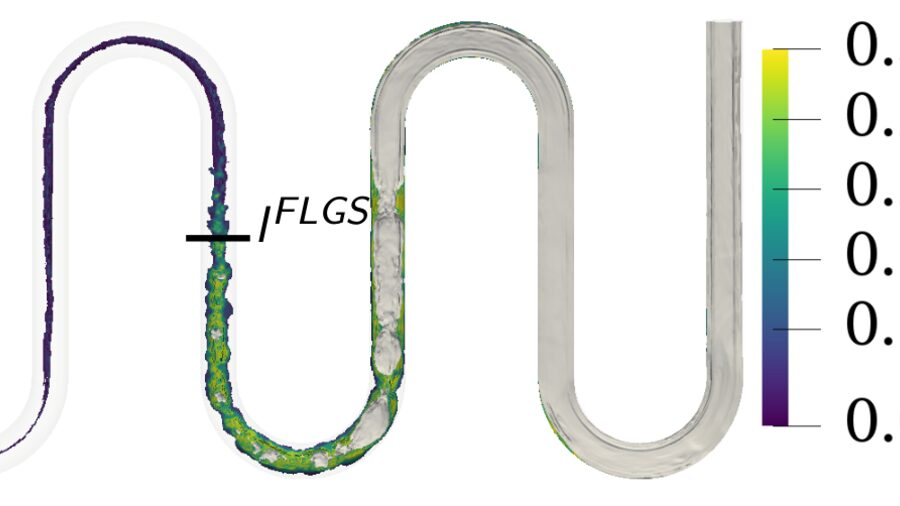

Recherche et développement de solveurs CFD pour les écoulements turbulents et polyphasiques
Je travaille sur la simulation numérique des écoulements turbulents et polyphasiques, de bout en bout : l'analyse physique de l'écoulement, le modèle qui le décrit, son implémentation dans un code de calcul industriel et sa confrontation à l'expérience.
Actuellement Chercheur postdoctorant au CEA Saclay, où j'implémente la méthode hybride RANS-LES HTLES dans TrioCFD et l'applique à des écoulements turbulents internes, avec Alan Burlot.
J'ai soutenu ma thèse en 2024 au laboratoire PROMES de l'Université de Perpignan Via Domitia, sur la simulation résolue d'écoulements fluide-particules anisothermes pour le solaire à concentration, sous la direction d'Adrien Toutant, Samuel Mer et Françoise Bataille.
Thématiques de recherche
La simulation haute fidélité reste hors de portée pour la plupart des configurations industrielles, et les modèles qui la remplacent sont le plus souvent calibrés sur des configurations académiques éloignées de celles auxquelles on les applique. Ce qui m'intéresse, c'est justement de réduire cet écart : décider quelle part d'un écoulement doit réellement être résolue, et rattraper ce qu'un calcul grossier laisse de côté au lieu de s'en accommoder. Les formulations hybrides RANS/LES et les corrections de sous-maille sont deux voies que j'ai empruntées jusqu'ici ; je voudrais poursuivre sur la question qui leur est commune, celle des conditions dans lesquelles un calcul abordable peut être tenu pour fiable.
Compétences que je souhaite développer
- Apprentissage automatique appliqué à la modélisation de la turbulence et des écoulements polyphasiques
- Méthodes de Boltzmann sur réseau
- Architectures GPU et portabilité des codes
Domaines où je souhaite travailler
- Énergies renouvelables
- Turbulence atmosphérique
- Énergie nucléaire
Recherche
-

Simulation hybride RANS-LES
Implémentation de la méthode HTLES dans TrioCFD, et définition d'un critère physique pour localiser les régions du domaine qui nécessitent une description instationnaire.
-

Simulation résolue de particules
Hydrodynamique et transferts thermiques dans les lits fluidisés anisothermes, et une échelle de résolution corrigée en sous-maille pour les simulations dont le coût interdit de résoudre les couches limites.
-

Écoulements diphasiques bouillants
Simulation Euler-Euler d'écoulements bouillants dans les tubes récepteurs des centrales à génération directe de vapeur, avec transfert thermique conjugué dans la paroi du tube.
Développements logiciels
Mes développements sont intégrés à TRUST/Trio_CFD, la plateforme CFD open source du CEA, où ils profitent à l'ensemble des utilisateurs du code. Pendant ma thèse, j'y ai ajouté le calcul des forces hydrodynamiques et du flux de chaleur sur les particules résolues, une détection de collisions optimisée combinant la méthode Link-Cell et les tables de Verlet, qui a réduit de 20 % le temps de calcul global, un indicateur de phase plus précis aux faces et aux arêtes des volumes de contrôle, et la correction de sous-maille de la force hydrodynamique à résolution grossière. Le travail actuel y ajoute la formulation HTLES et son terme de forçage de la turbulence.
Chacun de ces développements s'accompagne de fiches de validation et de cas tests de non-régression, sans quoi une contribution ne survit pas à la version suivante. J'ai également travaillé avec NEPTUNE_CFD, Code_Saturne, SYRTHES, Salomé et le remailleur Mmg, en C++ et en Python, sur des supercalculateurs nationaux avec jusqu'à 3 800 processeurs, et sur le portage GPU via Kokkos.
L'emploi de ces méthodesPublications récentes
- 2026 Extensive analysis of hydrodynamics in liquid–solid fluidized beds with particle-resolved simulations International Journal of Multiphase Flow · 202, 105789
- 2025 Investigation of heat transfers with particle-resolved simulations: from Stokes flow to fluidized bed International Journal of Heat and Mass Transfer · 241, 126687
- 2024 Modélisation et simulations résolues d'écoulement fluide-particules : du régime de Stokes aux lits fluidisés anisothermes Thèse de doctorat · Université de Perpignan Via Domitia
Enseignement et responsabilités
92 heures de travaux dirigés et de travaux pratiques en mécanique des fluides, transferts radiatifs, méthodes numériques et énergie éolienne, à l'Université de Perpignan Via Domitia et à Sup'ENR, entre 2022 et 2024. Trois stages encadrés pendant la thèse.
Relecteur pour la revue International Journal of Heat and Mass Transfer.
Cours enseignés